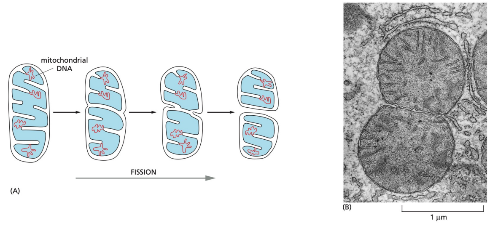

Thay mới màng, ribosome và bào quan
VN09 · Phát sinh bào quan · 3 trắc nghiệm và 1 tự luận
Bắt đầu học ↓Học trọn chương và làm bộ 80 trắc nghiệm, 15 tự luận
Sau buổi này
- Theo nguồn chất cấu tạo và tuyến phân phối khi tế bào thay mới cấu trúc.
- Tách lắp ribosome khỏi phát sinh ty thể và lục lạp.
- Dự đoán một bào quan bị ảnh hưởng khi mất nguồn từ gene nhân.
Gợi nhớ
Lưới nội chất, nhân con và ty thể cùng tham gia sinh tổng hợp. Nêu một sản phẩm chính hoặc việc làm của từng nơi.
Học kiến thức qua hình
Quan sát hình minh họa

Sơ đồ phân đôi đặt cạnh ảnh hiển vi với thước 1 µm.
Quan sát · Lần theo vùng thắt trong sơ đồ rồi tìm vị trí tương ứng trong ảnh. Dùng thước để đọc độ lớn theo cỡ micromet.
Dự đoán · Nếu một ty thể còn DNA riêng của nó nhưng không nhận được một protein thiết yếu do gene nhân mã hóa, liệu việc duy trì bào quan còn có thể bị cản trở không?
Mở giải thích sau khi dự đoán
Có. Hình cho thấy một bào quan có sẵn có thể phân chia, trong khi nhiều thành phần để duy trì cấu trúc và chức năng vẫn phải được tế bào đưa tới từ nguồn gene nhân.
| Cấu trúc | Nguyên liệu/nguồn | Nơi hoặc tuyến tiếp theo |
|---|---|---|
| Màng hệ nội màng | Lipid và protein ở lưới nội chất | Túi, Golgi hoặc tuyến chuyển lipid tùy đích |
| Ribosome bào tương | rRNA và protein ribosome | Lắp tiểu đơn vị ở nhân, xuất ra bào tương |
| Ty thể/lục lạp | Gene bào quan và nhiều gene nhân | Nhập protein; tăng trưởng, phân chia hoặc biệt hóa trên nền bào quan có sẵn |
Đọc nguồn vật liệu, nơi lắp và đường tới đích.
Đọc hình để tự rút ra cơ chế
Quan sát · Tế bào vẫn có genome lục lạp nhưng một protein do gene nhân mã hóa đã không tới được lục lạp.
Dự đoán · Genome riêng có đủ để loại trừ lỗi phát triển lục lạp không?
Mở giải thích sau khi dự đoán
Không. Lục lạp phụ thuộc protein do cả hai bộ gene đóng góp. Thiếu nhập protein nhân mã hóa vẫn có thể làm gián đoạn.
Màng luôn được thay mới
Mạng lưới nội chất là nơi tổng hợp nhiều lipid màng. Lipid đi đến các màng khác qua tuyến túi hoặc vận chuyển không qua túi tùy đích. Protein tiết và nhiều protein màng tiếp tục theo lưới nội chất–Golgi–đích.
Lắp ribosome nhân thực
Nhiều rRNA được tổng hợp và xử lý ở nhân con. Protein ribosome được dịch ở bào tương rồi nhập nhân; các tiểu đơn vị được lắp ráp và xuất ra bào tương. Ribosome bào tương nhân thực là 80S, gồm 60S và 40S; S là hệ số lắng, không cộng số học.
Ty thể và lục lạp
Các bào quan này có genome riêng nhưng phần lớn protein do gene nhân mã hóa. Cấu trúc phát triển nhờ tiếp nhận protein/lipid, phân chia bào quan có sẵn và, với lạp thể, biệt hóa từ dạng tiền thân. Trong mô thực vật phù hợp, ánh sáng ảnh hưởng phát triển cấu trúc quang hợp của lạp thể.
Liên hệ thực tế
Đọc mọi mô hình thay mới bào quan bằng ba câu hỏi: cấu phần do gene nào cung cấp, được tạo ở đâu và đi đến vị trí sử dụng bằng tuyến nào.
Cụm bài tập
Ba nhãn vật liệu đang thay mới
Mẫu M theo lipid mới từ lưới nội chất. Mẫu R theo protein ribosome vừa dịch ở bào tương. Mẫu L có lục lạp giữ DNA riêng nhưng mất một protein do gene nhân mã hóa.
Đối chiếu bài làm
Chọn một chỗ còn phân vân. Giải thích lại bằng lời của mình rồi thử một câu cùng dạng.